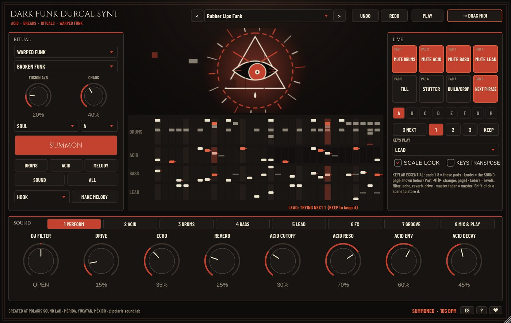
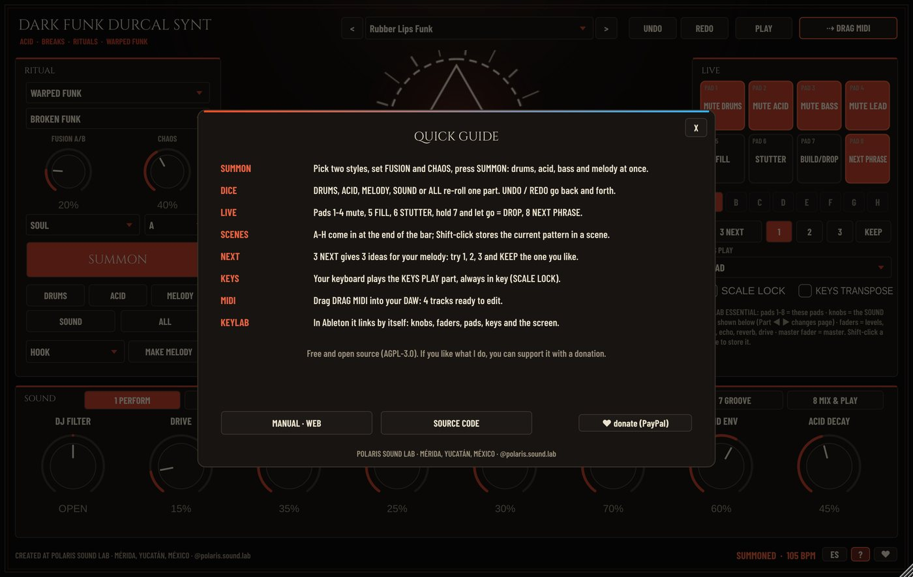

Plugin para cualquier DAWPlugin for any DAW
AU · VST3 · APP INDEPENDIENTESTANDALONE APP
Ableton · Logic · FL Studio · Bitwig · Reaper · Cubase · Studio One · GarageBandAbleton · Logic · FL Studio · Bitwig · Reaper · Cubase · Studio One · GarageBand

Free and open source · AGPL-3.0Gratis y de código abierto · AGPL-3.0
Instalación fácilEasy install
Un doble clic instala todo: el plugin, la app y el enlace automático del KeyLab para Ableton.One double-click installs everything: the plugin, the app and the automatic KeyLab link for Ableton.
Clic derecho en Install.command y elige Abrir.Right-click Install.command and choose Open.
Doble clic en Install.bat y pulsa Sí.Double-click Install.bat and press Yes.
Pads = pads LIVE · perillas = el banco de sonido · faders = niveles y efectos · teclas = melodía en tono.Pads = LIVE pads · knobs = the sound bank · faders = levels and effects · keys = melody in key.
Free and open sourceGratis y de código abierto
No trial, no limits, no account. The source is on GitHub under the AGPL-3.0: learn from it, change it, share it.Sin prueba, sin límites, sin cuenta. El código está en GitHub bajo la AGPL-3.0: apréndelo, cámbialo, compártelo.
If you like what I do, you can buy me a coffee:Si te gusta lo que hago, puedes invitarme un café: ♥ PayPal · drophlex@gmail.com

Sí: completo, sin prueba ni códigos, y de código abierto (AGPL-3.0). Si te gusta, puedes invitarme un café por PayPal (drophlex@gmail.com).Yes: complete, no trial and no codes, and open source (AGPL-3.0). If you like it, you can buy me a coffee via PayPal (drophlex@gmail.com).
Viene en inglés: pulsa ES en la esquina de abajo a la derecha del plugin. EN lo regresa al inglés.It comes in English: press ES in the plugin’s bottom-right corner for Spanish. EN brings English back.
Usa clic derecho › Abrir en Install.command (no doble clic). Si aún no: Ajustes del Sistema › Privacidad y seguridad › “Abrir de todos modos”.Use right-click › Open on Install.command (not a double-click). Still not: System Settings › Privacy & Security › “Open Anyway”.
Settings › Plug-Ins: activa “Use VST3 Plug-In System Folders” (y en Mac “Use Audio Units v2”) y pulsa Rescan.Settings › Plug-Ins: turn on “Use VST3 Plug-In System Folders” (and on Mac “Use Audio Units v2”) and press Rescan.
Sí: cualquier teclado MIDI toca en tono, y los pads en notas 36–43 (canal 10 u 11) son los pads LIVE. Las 64 perillas se pueden asignar con el MIDI-learn de tu DAW.Yes: any MIDI keyboard plays in key, and pads on notes 36–43 (channel 10 or 11) are the LIVE pads. The 64 knobs can be mapped with your DAW’s MIDI learn.